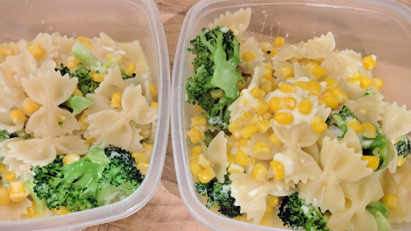

Cheesey corn and broccoli pasta
A quick and easy supper idea that children will love as much as adults.
Ingredients
- 100 g farfelle (pasta bows)
- 140 g broccoli florets
- 198 g can sweetcorn, drained and rinsed
- 25 g butter
- 100 ml milk
- 100 g cheddar cheese grated
Instructions
- Cook the pasta in a large pan of salted boiling water for 8-10 minutes, until tender. Add the broccoli and sweetcorn to the water for the last 4 minutes.
- While the pasta is cooking, melt the butter in a medium saucepan with the milk, then bring to the boil and remove from the heat. Tip in the cheese and stir until melted.
- Drain the pasta and vegetables well, return to the pan and pour in the sauce. Toss to mix well and season to taste before serving.
Source
BBC Good Food: Pasta and Noodle DishesShort URL Long URL Print